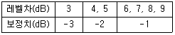

환경기능사 (2006-10-01 기출문제)
1과목: 대기오염방지
1. 다음 중 최근에 문제되는 다이옥신의 발생원에 대한 설명으로 틀린 것은?
- 미연탄화수소가 질소와 반응할 때 발생된다.
- 염소화합물에 의한 표백처리공정에서 발생된다.
- 염화페놀 관련물질의 제조공정에서 발생된다.
- 도시폐기물을 소각할 때 발생된다.
(정답률: 35%)

2. 다음 중 상온에서 물에 대한 용해도가 가장 큰 기체는?
- SO2
- CO2
- HCl
- H2
(정답률: 56%)
3. 실내 공기오염의 지표가 되는 것은?
- 질소 농도
- 일산화탄소 농도
- 산소 농도
- 이산화탄소 농도
(정답률: 65%)
4. 액화천연가스(LNG)의 주성분으로 가장 적절한 것은?
- 프로판
- 부탄
- 메탄
- 에탄
(정답률: 76%)
5. 직경이 200mm인 표면이 매끈한 직관을 통하여 풍량 100m3/분의 표준공기를 송풍할 때, 관내 평균풍속은?
- 50m/s
- 53m/s
- 60m/s
- 62m/s
(정답률: 30%)
6. 프로판가스(C3H8) 1.5 Sm3를 완전 연소하는데 필요한 이론공기량(Sm3)은?
- 24.4
- 35.7
- 42.8
- 53.8
(정답률: 40%)
7. 여과 집진장치에 대한 설명으로 맞는 것은?
- 겉보기 여과 속도가 클수록 미세입자를 포립한다.
- 부착 먼지를 털어내는 방식에는 간헐식과 연속식이 있다.
- 여포의 손상과 온도 및 압력은 무관하다.
- 여포재 선택시 매연의 성상은 중요하지 않다.
(정답률: 52%)
8. 싸이클론의 집진효율을 향상시키기 위한 조건으로 옳지 않은 것은?
- 배기관의 지름을 크게 한다.
- 입구 가스의 속도를 빠르게 한다.
- 싸이클론 내부의 가스 회전수를 많게 한다.
- 블로운 다운(blow down) 효과를 이용한다.
(정답률: 51%)
9. 다음 중 지구 온난화에 가장 큰 영향을 주는 물질은?
- 염화수소
- 암모니아
- 이산화탄소
- 황산 미스트
(정답률: 84%)
10. 대기오염방지시설 환기시설 설계에서 포착속도(제어속도)의 설명이 올바르게 된 것은?
- 오염물질이 덕트를 통과하는 최소의 속도
- 오염물질을 오염원에서 후드로 이동시키기 위한 속도
- 오염물질이 배출구를 통과하는 속도
- 오염물질이 덕트를 통과하는 최대의 속도
(정답률: 59%)
11. 압축된 프로판(C3H8) 가스 1kg이 모두 기화된다면 표준상태에서 몇 Sm3가 되는가?
- 0.51Sm3
- 0.69Sm3
- 0.76Sm3
- 0.85Sm3
(정답률: 26%)
12. 대기오염물질인 분진의 제거방법 중 적당치 않은 것은?
- 촉매 산화법
- 중력 침강법
- 세정법
- 백-필터법
(정답률: 53%)
13. 일산화탄소의 성질을 설명한 것이다. 옳지 않은 것은?
- 공기보다 무겁다.
- 무색, 무미, 무취이다.
- 연료의 불완전 연소시에 발생한다.
- 헤모글로빈과의 결합격이 강하다.
(정답률: 56%)
14. 35℃, 750mmHg 상태에서 NO2 100g 이 차지하는 부피는 몇 L 인가?
- 22.4
- 35.6
- 47.8
- 55.7
(정답률: 23%)
15. 어떤 집진장치의 입구에서 분진농도가 7.2g/Sm3 이고, 출구에서의 농도가 0.3g/Sm3 이였다면 집진율(%)은?
- 91.62
- 93.25
- 95.83
- 97.49
(정답률: 44%)
2과목: 폐수처리
16. 비점오염원의 특징이 아닌 것은?
- 일간, 계절간의 배출량 변화가 크다.
- 기상조건, 지질, 지형 등의 영향이 크다.
- 빗물, 지하수 등에 의하여 희석되거나 확산되면서 넓은 장소로부터 배출된다.
- 지표수 유출이 거의 없는 갈수시 하천수 수질악화에 큰 영향을 미친다.
(정답률: 66%)
17. 포기조 운전시 유의사항과 가장 거리가 먼 것은?(오류 신고가 접수된 문제입니다. 반드시 정답과 해설을 확인하시기 바랍니다.)
- 조내의 미생물 농도를 적절히 유지
- DO농도를 적절히 유지
- 침강이 잘 일어나도록 조의 깊이를 적절히 유지
- 침상성이 좋은 활성슬러지가 생성되도록 적절한 환경을 조성
(정답률: 36%)
18. 활성슬러지 공법에서 2차침전지 슬러지를 포기조로 반송시키는 주된 목적은?
- 슬러지를 순환시켜 배출슬러지를 최소화하기 위해
- 포기조 내 요구되는 미생물 농도를 적절하게 유지하기 위해
- 최초침전지 유출수를 농축하기 위해
- 폐수중 무기고형물을 산화하기 위해
(정답률: 68%)
19. 완속여과의 특징을 나타낸 것이다. 이 중 잘못된 것은?
- 손실수도가 비교적 적다.
- 유지관리비가 적다.
- 시공비가 적고 부지가 좁다.
- 처리수의 수질이 양호하다.
(정답률: 60%)
20. 탈기법으로 수중의 암모니아를 제거하고자 할 때, 25℃에서 가장 적절한 pH는?
- 4.5
- 5.6
- 7.0
- 11.0
(정답률: 24%)
21. 폐수의 유량 20,000m3/일, 부유물질의 농도가 150mg/L 이고, 이 중 하천바닥에 침전하는 것이 30% 이면, 그 침전양은 얼마인가?
- 900kg/일
- 950kg/일
- 1000kg/일
- 1⑤0kg/일
(정답률: 23%)
22. 소수성 콜로이드에 관한 설명으로 틀린 것은?
- 현탁상태로 존재한다.
- 염에 민감하지 못하다.
- 틴달효과가 크다.
- 표면장력이 용매와 비숫하다.
(정답률: 50%)
23. 무기응집제인 알루미늄염의 장점이 아닌 것은?
- 적정 pH폭이 넓다.
- 독성이 없어 대량으로 주입할 수 있다.
- 시설을 더럽히지 않는다.
- 가격이 저렴하다.
(정답률: 34%)
24. 일반도시 폐수처리에 이용되고 있는 활성슬러지공법의 처리순서로 옳게 배열된 것은?
- 유입수 → 침사지 → 1차침전지 → 포기조 → 최종침전지 → 염소접촉조 → 유출수
- 유입수 → 침사지 → 1차침전지 → 염소접촉조 → 포기조 → 최종침전지 → 유출수
- 유입수 → 침사지 → 1차침전지 → 최종침전지 → 염소접촉조 → 포기조 → 유출수
- 유입수 → 1차침전지 → 침사지 → 포기조 → 최종침전지 → 염소접촉조 → 유출수
(정답률: 55%)
25. 인구 5000명의 도시하수처리장에 2000m3/day의 폐수가 유입된다. 최초침전지의 규격이 15m(L)×6m(W)×3m(H)일 때 침전지의 이론적 수리학적 체류시간(HRT)는?
- 1.88hr
- 2.14hr
- 2.68hr
- 3.24hr
(정답률: 24%)
26. 0.001M-HCl 용액의 pH는? (단, HCl은 100% 이온화된다.)
- 1
- 2
- 3
- 4
(정답률: 42%)
27. 혐기성 소화조의 장점이라 볼 수 없는 것은?
- 폐슬러지량 감소
- 유출수의 수질양호
- 고농도 폐수처리
- 이용가능한 가스생산
(정답률: 35%)
28. 아래는 글루코스(C6H12O6)의 혐기성 분해반응식이다. a, b로 알맞은 것은?(문제 오류로 반응식 복원에 실패했습니다 정답은 2번 입니다.)
- a=2, b=2
- a=3, b=3
- a=4, b=4
- a=3, b=4
(정답률: 61%)
29. 지구상에 존재하는 물의 형태중 해수가 차지하는 비율은?
- 약 75%
- 약 84%
- 약 91%
- 약 97%
(정답률: 73%)
30. 생물학적으로 질소와 인을 제거하는 A2/O 공정중 혐기조의 주된 역할은?
- 질산화
- 탈질화
- 인의 방출
- 인의 과잉섭취
(정답률: 66%)
31. 한 침전지가 9000m3/day의 하수를 처리한다. 침전지의 유입하수의 SS농도가 500mg/L, 침전지 유출수의 SS농도가 100mg/L일 때, 이 침전지의 SS제거율은?
- 60%
- 70%
- 80%
- 90%
(정답률: 37%)
32. 에탄올(C2H5OH) 100mg/L이 함유된 폐수의 이론적인 COD값은?
- 209mg/L
- 227mg/L
- 241mg/L
- 26mg/L
(정답률: 18%)
33. 활성슬러지 공정에서 미생물량에 대한 유입 유기물량을 나타낸 것은?
- A/S 비
- F/M 비
- C/N 비
- SAR 비
(정답률: 46%)
34. 살수여상에 의한 폐수처리 원리로 가장 알맞은 것은?
- 폐수내의 고형물이 산소와 결합하여 침전물을 형성한다.
- 쇄석내의 재질에 의해 용존 유기물이 여과된다.
- 폐수내의 고형물이 쇄석의 기공에 의해 흡수 및 흡착된다.
- 쇄석 표면에 번식하는 미생물이 폐수와 접촉하여 유기물을 섭취, 분해한다.
(정답률: 40%)
35. 인체에 ‘카네미유증’이란 만성질환을 발생시키는 유해물질은?
- Cd
- PCB
- F
- Mn
(정답률: 71%)
3과목: 폐기물처리
36. 폐기물을 새로운 수단인 파이프라인의 수송의 단점이 아닌 것은?
- 잘못 투입된 물건의 회수 곤란
- 조대폐기물은 파쇄, 압축 등의 전 처리 필요
- 장거리 수송의 곤란
- 폐기물 발생 밀도가 높은 곳은 사용 불가능
(정답률: 54%)
37. 폐기물 관리에 있어서 가장 우선적으로 중점을 두어야 할 분야는?
- 재회수 및 재활용
- 처리
- 최종처분
- 감량화
(정답률: 56%)
38. 어느 도시지역의 쓰레기 수거량은 179,250 ton/년 이다. 이 쓰레기를 1,363명이 수거한다면 수거능력(MHT)은? (단, 1일 작업시간은 8시간, 1년 작업일수는 310일이다.)
- 1.45
- 1.77
- 1.89
- 1.96
(정답률: 50%)
39. 총고형분이 70000ppm인 산업폐기물을 300m3를 매립하고 있다. 이중휘발성고형물(VS)이 50% 이었다면 LFG(m3)는? (단, LFG=메탄, 메탄 발생량은 VS kg당 0.5m3 발생한다고 가정함)
- 5250
- 6250
- 7250
- 8250
(정답률: 12%)
40. 폐기물을 파쇄시키는 과정에서 발생할 수 있는 문제점과 가장 거리가 먼 것은?
- 먼지 발생
- 소음 및 진동발생
- 폭발 발생
- 침출수 발생
(정답률: 66%)
41. 슬러지나 분뇨의 탈수 가능성을 나타내는 것은?
- 균등계수
- 알카리도
- 여과비저항
- 유효경
(정답률: 54%)
42. 화상위에서 쓰레기를 태우는 방식으로 플라스틱처럼 열에 열화, 용해되는 물질의 소각에 적합하여 체류시간이 길고 국부적으로 가열될 염려가 있는 소각로는?(오류 신고가 접수된 문제입니다. 반드시 정답과 해설을 확인하시기 바랍니다.)
- 고정상
- 화격자
- 회전로
- 다단로
(정답률: 16%)
43. 폐기물 발생량의 조사방법으로 가장 거리가 먼 것은?
- 적재차량 계수분석
- 직접계근법
- 간접계근법
- 물질수지법
(정답률: 65%)
44. 어느 도시 쓰레기를 분류하여 성분별로 수분함량을 측정한 결과 구성비가 중량으로 음식물 30%, 종이 50%, 금속 20%이고, 수분함량은 각각 70%, 20%, 10%이었다. 이 쓰레기의 수분함량은 몇 %인가?
- 30%
- 33%
- 36%
- 39%
(정답률: 40%)
45. 쓰레기의 소각능력이 100 kg/m2ㆍhr이고, 소각할 쓰레기의 양이 7500 kg/day 이다. 하루 8시간 소각로를 운전한다면 화격자의 면적(m2)?
- 10.90
- 9.38
- 6.38
- 5.69
(정답률: 51%)
46. 유해 폐기물을 처리하는 기술인 용매추출에 관한 설명으로 틀린 것은?
- 미생물로 분해시키기 어려운 물질이 함유된 폐기물에 적합한 기술이다.
- 활성탄을 이용하여 흡착하기에 농도가 너무 높은 물질이 함유된 폐기물에 적합한 기술이다.
- 용매는 극성이 있어 제거하고자 하는 성분을 용매로 흡수시킬 수 있어야 한다.
- 용매는 증류 등에 의한 방법으로 회수가 가능하여야 한다.
(정답률: 22%)
47. 도시쓰레기의 소각시 장점이 아닌 것은?
- 위생적이다.
- 운전비용이 적게 든다.
- 폐열이용이 가능하다.
- 매립 쓰레기량이 감소한다.
(정답률: 52%)
48. 인구가 200,000명인 지역에서 일주일 동안 수거한 쓰레기량은 1500m3이다. 1인 1일 쓰레기 발생량은? (단, 쓰레기밀도 0.5 ton/m3 이다.)
- 3.50 kg/인ㆍ일
- 4.45 kg/인ㆍ일
- 5.36 kg/인ㆍ일
- 6.43 kg/인ㆍ일
(정답률: 44%)
49. 슬러지의 안정화 방법으로 볼 수 없는 것은?
- 혐기성 소화
- 살수여상법
- 호기성 소화
- 퇴비화
(정답률: 52%)
50. 부피가 1,000m3고 밀도가 400 kg/m3인 폐기물을 밀도가 600 kg/m3가 되도록 압축시키면 부피는 얼마로 되는가?
- 454m3
- 521m3
- 593m3
- 667m3
(정답률: 23%)
51. 쓰레기의 고위발열량이 11,000 kcal/kg 이고 수소 조성비가 13%, 수분함량이 5%일 때 저위발열량은?
- 약 9900 kcal/kg
- 약 10300 kcal/kg
- 약 1⑤00 kcal/kg
- 약 10700 kcal/kg
(정답률: 49%)
52. 슬러지를 개량(conditioning)하는 가장 큰 목적은?
- 탈수성 향상
- 조성의 변화
- 악취 제거
- 부패 방지
(정답률: 63%)
53. 폐기물에서 에너지를 회수하는 방법이 아닌 것은?
- 혐기성 소화
- 슬러지 개량
- RDF 제조
- 소각열 회수
(정답률: 53%)
54. 슬러지 처리의 일반적인 계통도로 옳은 것은?
- 농축 - 안정화 - 개량 - 탈수 - 소각 - 최종처분
- 안정화 - 농축 - 개량 - 탈수 - 소각 - 최종처분
- 안정화 - 농축 - 탈수 - 개량 - 소각 - 최종처분
- 안정화 - 탈수 - 농축 - 개량 - 소각 - 최종처분
(정답률: 49%)
55. 85%의 함수율을 갖고 있는 쓰레기를 건조시켜 함수율이 25가 되었다면 쓰레기 1통에 대하여 증발하는 수분의 양은? (단, 비중은 1.0)
- 600kg
- 700kg
- 800kg
- 900kg
(정답률: 40%)
4과목: 소음 진동학
56. 소음계의 구성 요소에서 음파의 미약한 압력변화(음압)를 전기 신호로 변환하는 것은?
- 정류회로
- 마이크로폰
- 동특성조절기
- 청감보정회로
(정답률: 64%)
57. 마스킹 효과에 관한 내용으로 알맞지 않은 것은?(오류 신고가 접수된 문제입니다. 반드시 정답과 해설을 확인하시기 바랍니다.)
- 음파의 맥동에 의해 일어난다.
- 두 음의 주파수가 비슷할 때 효과가 대단히 커진다.
- 두 음의 주파수 차가 클 때는 Doppler 현상에 의해 효과가 감소한다.
- 두 음의 주파수가 거의 같을 때는 효과가 감소한다.
(정답률: 12%)
58. 사람의 귀는 기능상 외이, 중이, 내이로 구분될 수 있다. 다음 중 내이에 관한 설명으로 틀린 것은?

- 음의 전달 매질은 액체이다.
- 이소골에 의해 진동음압을 20배 정도 증폭시킨다.
- 이관은 중이의 기압을 조정한다.
- 난원창은 이소골의 진동을 외우각 중의 림프액에 전달하는 진동판이다.
(정답률: 34%)
59. 어떤 기계의 가동진동레벨이 77dB이고 정지(배경)진동레벨이 68dB이었다면 이 기계의 발생 진동 레벨은?
- 76dB
- 75dB
- 74dB
- 73dB
(정답률: 11%)
60. 파동의 종류 중 ‘횡파’에 관한 설명으로 틀린 것은?
- 파동의 진행방향과 매질의 진동방향이 서로 평행한다.
- 매질이 없어도 전파된다.
- 물결파(수면파)는 횡파이다.
- 지진파의 S파는 횡파이다.
(정답률: 35%)
미연탄화수소는 화학식이 CH4인 가스로, 일반적으로 천연가스나 생물가스에서 발생합니다. 이 가스는 질소와 반응하여 질소산화물과 물을 생성합니다. 따라서 다이옥신의 발생원으로는 해당되지 않습니다.
반면, 염소화합물에 의한 표백처리공정에서는 염소와 유기물이 반응하여 다이옥신이 생성됩니다. 이러한 공정에서 발생하는 다이옥신은 환경오염물질로 인식되어 관리되고 있습니다.